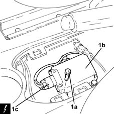

3350E30 lateral acceleration and yaw sensor r r
- Path
- Procedures > 33 BRAKING SYSTEM > 3350 DRIVE CONTROL' > 3350E vehicle direction control system vdc > 3350E30 lateral acceleration and yaw sensor r r
- Kind
- repair procedure (removal / refitting; the operation number is the code)
- Applies to
- all engines; all production periods
- Interactive page
- https://sloeber94.github.io/elrnDB-lYpsln/en/#/2429205
Applies to: all engines; all production periods
 Removing
Removing
 Refitting
RefittingProceed with removal 7040L28 tunnel switch panel - r r .
1. Undo the bolt (1a), raise sensor (1b) and disconnect the electrical connection (1c).
 | Name | Connector |
|---|---|---|
1c | Yawing sensor |

Applies to: all engines; all production periods
Refitting
RemovingRefit the sensor, secure with bolts and connect the electrical connection.
Calibrate the lateral acceleration and yaw sensor following the procedure indicated by the Examiner test station.